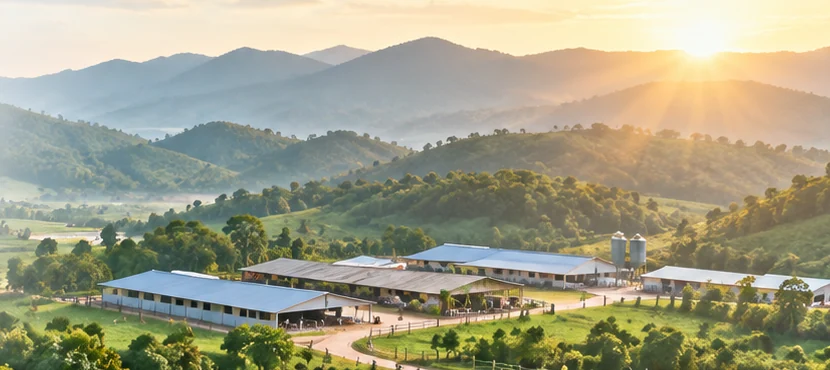
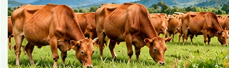
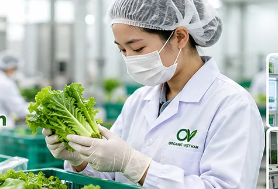
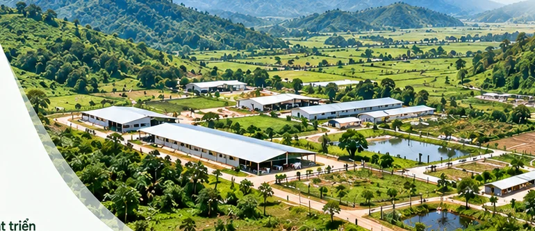
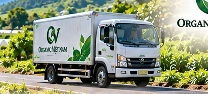
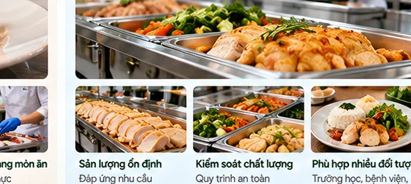

Hình minh họa
Hình minh họaTHỰC PHẨM & NÔNG NGHIỆP VIỆT NAMTự nhiên tạo nên
Tự nhiên tạo nên
giá trị thật.
Khởi nguồn từ nông nghiệp, hướng đến thực phẩm minh bạch, chuỗi cung ứng có trách nhiệm và sự gắn kết bền vững với cộng đồng.
Trang trại & vùng nguyên liệu Kiểm soát chất lượng Truy xuất minh bạch

Farm · Foods · Market · DigitalMột hệ sinh thái, cùng hướng đến giá trị lâu dài
DANH MỤC ĐỊNH HƯỚNGThực phẩm cho mỗi ngày
Tất cả sản phẩm Thực phẩm cho mỗi ngày
và nhiều nhu cầu sử dụng.


Nuôi dưỡng
giá trị Việt
giá trị Việt
VỀ ORGANIC VIỆT NAMTừ những giá trị của đất,
Tìm hiểu về chúng tôi
Từ những giá trị của đất,
đến niềm tin trên bàn ăn.
Organic Việt Nam được định hướng phát triển mô hình kết nối sản xuất nông nghiệp, thực phẩm, thương mại và công nghệ trong một chuỗi giá trị thống nhất.
Chúng tôi hướng tới việc quản trị nguồn cung, chất lượng và hành trình sản phẩm bằng quy trình rõ ràng, thông tin được kiểm chứng.
Nguồn gốcĐược ghi nhận
Chất lượngĐược kiểm soát
Cộng đồngĐược kết nối
HỆ SINH THÁI ORGANIC VIỆT NAM
Bốn trụ cột – Một chuỗi giá trị.
Phát triển từng mắt xích theo năng lực thực tế, kết nối bằng tiêu chuẩn và dữ liệu.
HÀNH TRÌNH SẢN PHẨM
Tìm hiểu kiểm soát chất lượngTừ nguồn cung đến khách hàng.

Nguồn cung
Tổ chức nguồn nguyên liệu.

Kiểm soát đầu vào
Ghi nhận tiêu chuẩn lô.

Sơ chế – đóng gói
Theo dõi công đoạn.

Kho vận
Bảo quản phù hợp.

Phân phối
Điều phối theo nhu cầu.

Khách hàng
Tiếp nhận phản hồi.
SẢN PHẨM NỔI BẬT
Xem toàn bộ danh mục Khám phá danh mục của chúng tôi.
Các nhóm sản phẩm đang được nghiên cứu và phát triển theo định hướng kinh doanh.
Hình minh họa Hình minh họa
Hình minh họa Hình minh họa
Hình minh họa Hình minh họa
Hình minh họa* Hình ảnh minh họa; danh mục chưa thể hiện hàng hóa đang bán hoặc chứng nhận hữu cơ đã được cấp.
Hình minh họa
CHẤT LƯỢNG & MINH BẠCHNiềm tin bắt đầu
Niềm tin bắt đầu
từ những thông tin
có thể kiểm chứng.
Chất lượng được định hướng quản lý từ đầu vào đến phân phối, với hồ sơ lô hàng, điều kiện bảo quản và quy trình xử lý phản hồi.
- Ghi nhận nguồn gốc và lô sản xuất
- Kiểm soát công đoạn trọng yếu
- Công khai thông tin phù hợp, có bằng chứng
TRANG TRẠI KHE XAI · HÀ TĨNHNông nghiệp gắn với
Nông nghiệp gắn với
trách nhiệm sử dụng
tài nguyên.
Khe Xai là khu vực được đề cập trong định hướng dự án. Quy mô sử dụng đất, hạ tầng và khả năng khai thác cần được xác minh theo hồ sơ pháp lý.
Khám phá định hướng trang trại